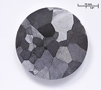

Numero atomico: 23
Massa atomica: 50,94
Temperatura di fusione (°C): 1910
Temperatura di ebolizione (°C): 3407
Energia di prima ionizzazione (kj/mol): 651
Elettronegatività (secondo Pauling): 1,63
Densità: 6,11
Numeri di ossidazione: +2+3+4+5
Configurazione elettronica: 1s2, 2s2, 2p6, 3s2, 3p6, 3d3, 4s2
Maggiori Informazioni